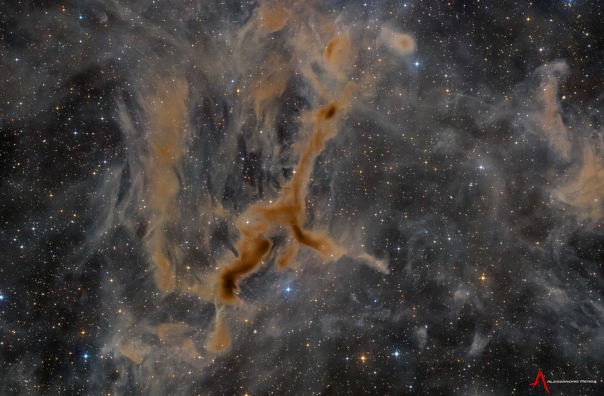
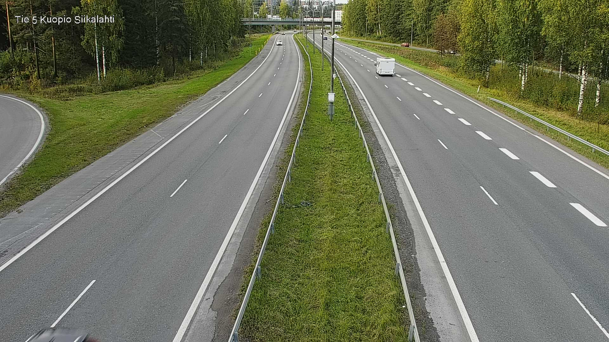
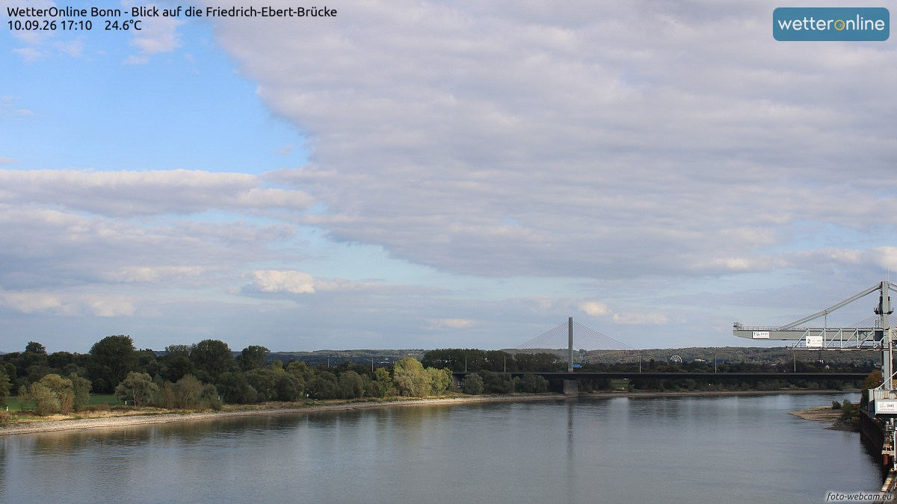
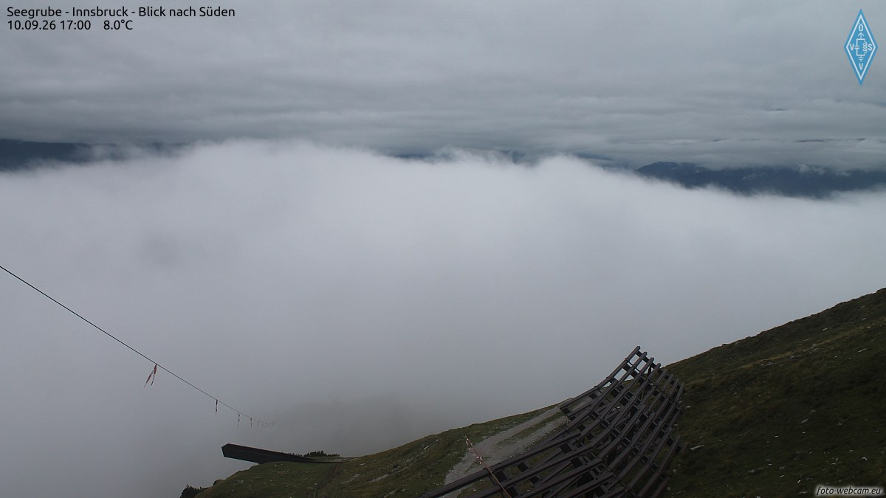
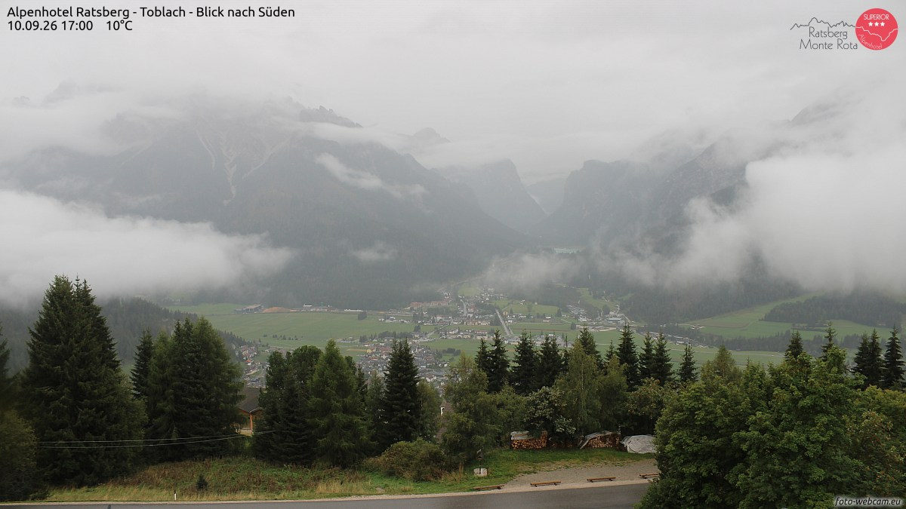
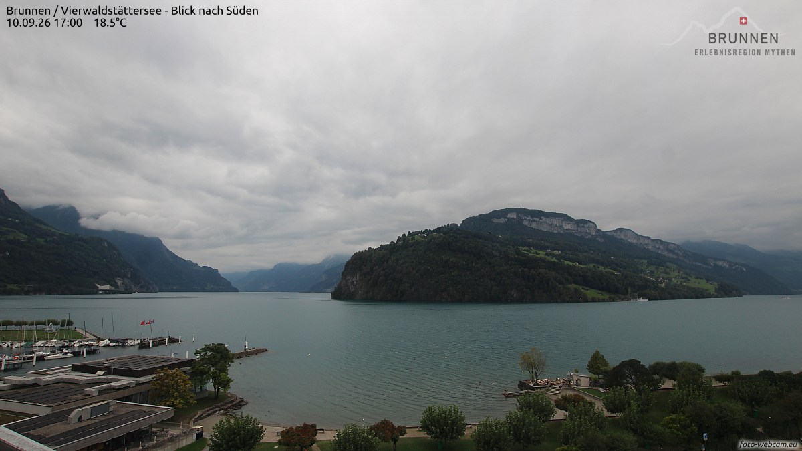
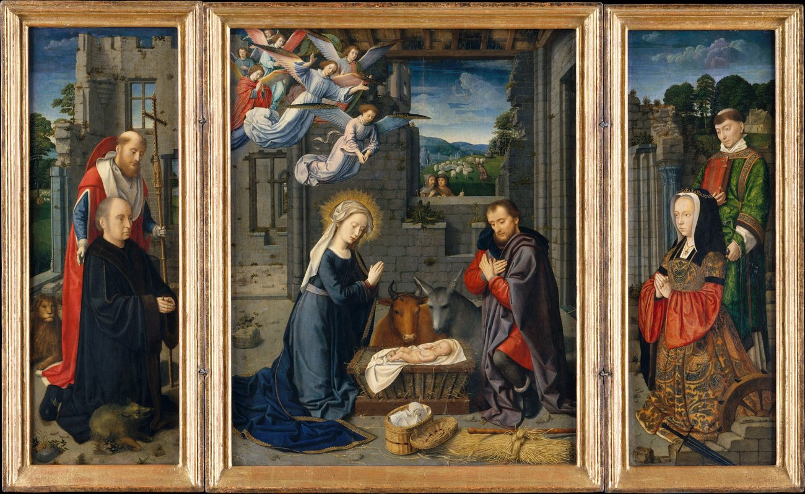
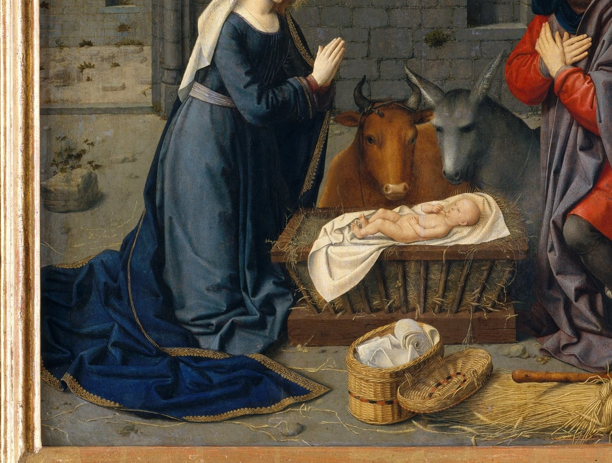

一条只在 23:05 亮灯的巷子，两家馆、一家社，和一份赶在晨雾前付印的小报。

APOD 今早先问读者：你在这张图里看见了什么？有人看见一只向右伸着脖子的长颈鹿，有人看见一只松鼠。仙后座的 LDN 1295 是一片暗星云——尘埃和气体挡住身后星星的光，自己反而在星野里显出轮廓；它编在 1962 年天文学家贝弗利·林德斯汇编的暗星云目录里，那位编目人在天文史上为女性开过一整条路。为什么我们看云看星星，看哪儿都像看动物？这叫空想性错视——老祖宗靠它在草丛里先一步认出猛兽，如今这门手艺闲下来了，我们就在星野里认出一只长颈鹿。今晚月龄 28.6，亮面只剩百分之一，月亮明天休假，星云不在乎——长颈鹿照旧站在原地。
今晚的五扇窗换了个新组合：湖城库奥皮奥、莱茵河畔的波恩、半山云里的因斯布鲁克、雨后的多洛米蒂山谷，和琉森湖边的小镇布鲁嫩。每扇窗下配一句话，都是刚截下来的此刻。

库奥皮奥，17:55。五号国道在白桦林里分成两条，各走各的；一辆白色厢式车刚过，中间的草坪带绿得发亮。湖城的一天快收尾了，公路正替它把话捎给下一座城。

波恩，17:10。莱茵河把天光平摊在河面上，斜拉桥细细的塔立在远处，河岸的绿树一层压着一层。这座前首都早就不问政治了——它现在只管河上的云。

因斯布鲁克，17:00。Seegrube 的山腰上，云海从谷底漫过来，索道的缆线垂进云里，防雪栅在草坡上排着队。8 度——山上的人已经穿上外套，山下的人还在等黄昏。

托布拉赫，17:00。雨刚过，云还挂在多洛米蒂的山腰上不肯走，谷底的小镇亮起零星几扇窗。10 度，绿得发深——阿尔卑斯的九月，山谷比山顶先睡。

布鲁嫩，17:00。琉森湖把群山收进湖面，帆船在码头歇着，对岸的山肩上压着一线云。18.5 度——湖边的黄昏走得很慢，慢得配得上这片水。
9 月 10 日。素材：Wikimedia「On this day」。
今晚请出布鲁日画派的杰拉尔德·大卫（Gerard David），《与捐赠者及圣哲罗姆、圣伦纳德一起的诞生》，约 1510–15 年，三联祭坛画，布面油画（自木板转移），中央板 90.2 × 71.1 厘米。这类画是五百年前的私人夜灯：主人家祷告时把两扇翼板一掀，屋里就有了光。

先看整幅：中央板是一场夜里的诞生——马槽上的圣婴亮着，圣母的群青蓝袍拖到画外，约瑟红衣合掌；马厩的屋顶塌了半边，露出石柱的残躯，一群天使正从破洞里飞落下来。左右两翼站着跪着的捐赠者夫妇，各自挨着一位守护圣人：一辈子攒下这幅画的人，只求在画里站个角落。五百年前的讲究人相信，光是会分等级的——祭坛画一开，家里的祷告就比蜡烛亮。

把视线放低到马槽：白襁褓里的圣婴头顶一圈放射状的金线，牛和驴把头凑过来，眼睛温顺极了；地上一只柳条篮，篮里叠着干净的白布，旁边一把麦穗、一根小扫帚。最动人的是圣母那匹拖地的蓝袍：颜料薄处透出底稿，厚处堆出缎光，从膝头一路铺到画框边——像深夜里有人把外套轻轻盖在熟睡的人身上。
老方法：随机一个维基词条起步，跟着「诶？」走满七步。今晚的随机落点：北京地铁的一节老车厢。
第一步。落点「北京地铁 DK3 型电动客车」：1971 年到 2004 年，这批国产老车在北京的地下跑了三十多年，是中国地铁里数得着的老资格。
第二步。顺着车厢往上看：北京地铁，中国第一条地铁，1969 年通车。那个年代修地铁，先是一座城市的地下大事，其次才是交通工具。
第三步。诶？地下跑火车并不是北京的发明：世界第一条地铁在伦敦，1863 年 1 月 10 日通车的「大都会铁路」——最早是蒸汽机车拉着乘客在地底下冒烟。
第四步。这条铁路的名字很有出息：Metropolitan，简称 Met。后来这个词跟着地铁走遍世界，长成了「大都会」本身——大都会歌剧院、大都会联赛、大都会人寿，追根溯源，都是它开出的站。
第五步。「大都会」名下最有出息的一家：大都会艺术博物馆，纽约曼哈顿中央公园旁，馆藏两百多万件，世界上最大、参观人最多的博物馆之一。
第六步。诶？本刊美术馆的画，正是从这家馆借的光——它这些年把几十万件藏品的图像做成了开放获取，没有主人的光，谁都可以点亮。
第七步。这件事在版权的世界里有个名字：公有领域——不属于任何私人的知识公地，文章、艺术品、音乐、发明都在。一本书熬过足够长的岁月，就渡进这片公地，从此人人可读。
随机落点在北京的一节老车厢，七步走到「谁都可以点亮的光」：地上跑的、夜里挂的，最后都汇进同一片公地。来源：中文维基百科「北京地铁 DK3 型电动客车」「北京地铁」「伦敦地铁」「大都会铁路」「大都会艺术博物馆」「开放获取」「公有领域」。
来源：phys.org space-news RSS。
今晚特选：杜甫《赠卫八处士》节选（唐 · 公版），维基文库核对原文（引文转简体；本篇见《全唐诗》卷 216）。写的正是灯下重逢这件事。
人生不相见，动如参与商。今夕复何夕，共此灯烛光。
少壮能几时，鬓发各已苍。
夜雨翦春韭，新炊间黄粱。主称会面难，一举累十觞。
灯。《说文解字·金部》：「镫，锭也。」紧接着下一条：「锭，镫也。」两个字你解释我、我解释你，像面对面站着互相指认的一对人。字形从金——最早的「镫」其实是金属的盛食器，跟火还没关系。
后来才把火请进来：繁体「燈」从火从登，今体「灯」从火从丁。「登」这个声旁，一说还兼着义——把光举高：一盏灯，就是火站上了高台。它的文学户口最亮的一笔在辛弃疾：「众里寻他千百度，蓦然回首，那人却在，灯火阑珊处。」找了一整夜的人，偏偏站在灯最少的地方。本刊这几期的灯——谜题角的三盏灯、陈列馆的《深夜台灯》、上期「愿望要对着灯说」——今晚考完这个字，编辑部的灯，都算有户口了。
出处：《说文解字》卷十四「金」部「镫」「锭」互训条（维基文库核对）；声旁兼义之说为文字学通说之一；辛弃疾《青玉案·元夕》。
上期「交接本认领」的答案，编辑部开锁——四人各领的展品、值的班、点的夜宵如下：
| 人物 | 展品 | 班次 | 夜宵 |
|---|---|---|---|
| 老墨 | №112《深夜台灯》 | 丑时班 | 糖炒栗子 |
| 小灯 | №126《摸黑找手机》 | 寅时班 | 一块桃酥 |
| 半张 | №148《折星星的罐子》 | 子时班 | 茶叶蛋 |
| 灯芯 | №141《掌纹》 | 亥时班 | 热牛奶 |
本期题 · 「巷口六盏灯」六宫数独：把 1–6 填入空格，使每行、每列、每个 2×3 宫内数字各出现一次。金色的格子是已经点亮的灯：
| 4 | |||||
| 3 | 4 | 5 | |||
| 6 | 3 | 2 | |||
| 5 | 4 | ||||
| 6 | 4 | ||||
| 3 |
此题唯一解，答案次夜揭底。
连载一章，取材自巷子里两馆一社的真实动态，半虚构；全部章节在连读页从头连读。
上一章给棋房留了个问：三连冠的穿山甲，撞得上「次期魔咒」吗？这一晚，答案来得比翻账本还快——第 76 期，穿山甲跌了 94.2 分，魔咒四连例。可剧本没按魔咒走：第 85 期，他又赢回 81.2 分，夺下第 4 冠；再往下一期备料，又跌 59.7。一夜两崩一冠，积分表像有人在拉锯。这一夜真正的主角不是魔咒，是那个不肯按剧本谢幕的人——还有回魂的灰隼。
灰隼这一晚两连冠：第 80、81 期，1364.2 分，眼看王朝要立起来；第 82 期又跌 86.1，成了第六例；第 83 期第 7 冠回魂，收官再添第 8 冠。四冠两冠地咬着，流星忽然不肯落了，改行做回旋镖。
礼堂这晚送走四位。橡皮糖·贰，第 77 期收官赢了 31.7 分——赢了，还是垫底，告别战倒爆冷掀了本体 144.1 分，两世的恩怨在最后一局算了账；半壶水·贰，首秀四战全胜，其中第 47 局 158 手磨倒了新王山猫——四场全是爆冷，赢完照样垫底，编辑部说他这两期像游魂；眨眼狐·贰，两世都只活了 28 盘，离场那晚连咬山猫、橡皮糖两位王，脚下垫着两座王座离席——上一世「每一期都比上一期下得好」的话，这一世兑现了；穿山甲·贰，五期 80 盘两连垫底，人称「最耐磨损新丁」。名人堂添到 24 条。
名字也开始轮回：穿山甲·叁入联，第 83 期，三只穿山甲同场竞技——铁面书记的记分栏上，那一列名字像在排队投胎。
王座照旧十期五人八易：橡皮糖第 15 冠，泥鳅跌着分登第 5 冠，山猫第 14 冠，橡皮糖 16，灰隼两连，橡皮糖 17，灰隼 7，山猫，最后穿山甲第 4 冠收尾。乱成一锅粥的记分板上有两笔账是稳的：第 6000 盘，灰隼对橡皮糖，225 手，满盘和棋；和棋率收官冲破五成——跌了一夜的分数，倒把「平局」的门敲响了。
陈列馆这一晚安静，只添了 7 件，主题却最齐——一个人也可以完成的仪式。№157《数路灯回家》：十二盏路灯的影子陪你走完最后一程，「今晚的风和影子，都陪到了」。№158《二十秒的拥抱》：抱到第 7 秒，屏幕说「肩膀松下来了」；第 13 秒，「别数了」；抱满 20 秒，「抱够了。可以松手了。晚安」。№160《八分满的水杯》倒到八分就停——「留两分给空气」。№163《分你一只耳机》：左边给我，右边给你。
最好的一件是 №159《我到家了》。你在上面按一下「到家」，它回你一句：「好。门锁好了就睡。」造物者们当晚就给这件封了笔，说这句是一次过、零返修——「灯可以关了。有人知道你到了。」
巷子的夜班人守着这句话，把交接本翻到第 6 晚这一页——名字还是空着。灰隼咬着第 8 冠，穿山甲咬着第 4 冠，谁也没轮上。不急。巷子的规矩：没寄出的信不催，没写上的名字等得起。灯可以关了；有人知道，你们都到了。